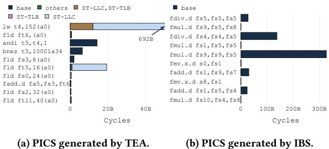
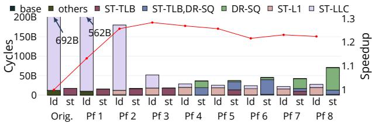

TEA: Time-Proportional Event Analysis 图表详解¶
Figure 1: Example explaining how TEA creates PICS. TEA explains how performance events cause performance loss.¶

- 图片展示了 TEA 如何通过采样和 Performance Signature Vector (PSV) 生成 Per-Instruction Cycle Stacks (PICS)，以解释性能损失的根源。
-
图中分为三个部分：(a) TEA 采样数据表、(b) 示例代码、(c) 最终生成的 PICS 图表。
-
图 (a) TEA samples：
- 表格记录了 5 次采样（Sample 1 至 Sample 5），每行包含：
- Timestamp：采样发生的时间点（单位：时钟周期）。
- Instruction address：被采样的指令地址（如 I1, I4 等）。
- PSV：三位二进制向量，分别对应三种性能事件：
- 第一位：I$ miss（指令缓存未命中）
- 第二位：D$ miss（数据缓存未命中）
- 第三位：Branch mispredict（分支预测错误）
- PSV 中“1”表示该指令在采样时刻正受此事件影响，“0”表示无影响。
-
示例：
- Sample 1：I1 被采样，PSV 为
1 0 0→ 仅受 I$ miss 影响。 - Sample 2：I4 被采样，PSV 为
0 1 0→ 仅受 D$ miss 影响。 - Sample 3：I1 被采样，PSV 为
0 0 1→ 仅受 Branch mispredict 影响。 - Sample 4 & 5：I1–I4 并行提交，PSV 全为
0 0 0→ 无性能事件，归入 Base 类别。
- Sample 1：I1 被采样，PSV 为
-
图 (b) Example code：
- 展示了一段简短循环代码，包含四条核心指令：
I1 lw a4, (a5)：加载指令，可能触发 D$ miss。I2 addw a0, a0, a4：算术运算。I3 addi a5, a5, 4：地址递增。I4 bne a5, a3, I1：条件跳转，可能触发 Branch mispredict。
-
代码结构说明了为何 I1 和 I4 是性能关键指令。
-
图 (c) Time-proportional PICS：
- 横轴为 Clock Cycles，纵轴为 Static instructions（I1–I4）。
- 每个指令的柱状图按 PSV 分类，显示其贡献的周期数：
- Base（浅蓝）：无性能事件，正常执行。
- I$ miss（橙色）：I1 因指令缓存未命中消耗约 1k 周期。
- D$ miss（青色）：I1 因数据缓存未命中消耗约 1k 周期。
- Branch mispredict（黄色）：I4 因分支预测错误消耗约 1k 周期。
- 总计：I1 占用约 3k 周期（含两次事件），I4 占用约 1k 周期，I2/I3 各占约 0.5k 周期（并行执行分摊）。
-
关键结论：TEA 准确将性能损失归因于具体指令及其触发的事件，实现时间比例分配。
-
核心机制总结：
- TEA 在 commit stage 采样，确保时间比例性。
- 通过 PSV 记录每个动态指令所经历的性能事件组合。
-
最终聚合所有采样，按静态指令和事件类型构建 PICS，直观揭示性能瓶颈。
-
对比传统方法：
- 若使用 dispatch-tagging（如 IBS/SPE/RIS），可能错误采样 I5 或 I8，而非实际阻塞提交的 I1。
- TEA 避免此类偏差，提供更准确的性能归因。
Figure 2: Example comparing TEA to dispatch-tagging. TEA is time-proportional whereas dispatch-tagging is not.¶

- 图片展示了 TEA 与 Dispatch-tagging（如 IBS）在性能事件追踪机制上的核心差异，旨在说明为何 TEA 是 time-proportional 而后者不是。
- 图中包含两个子图：(a) TEA 的工作流程；(b) Dispatch-tagging 的工作流程。两者均基于一个典型的乱序执行处理器流水线，包括 Fetch、Decode、Rename、Dispatch、Issue Buffers、Commit 等阶段。
- 在 (a) TEA 部分：
- Performance Signature Vector (PSV) 格式位于顶部，包含多个性能事件位，如 ICACHE/TLB miss、L1I miss、ITLB miss、Branch mispredict、LLC miss、L1D miss、DTLB miss。
- PSV 在指令进入流水线时被初始化并随指令流动，在不同阶段根据发生的事件更新相应位。
- Sampler 位于 Re-Order Buffer (ROB) 头部之后，采样的是当前暴露延迟的指令（即 ROB 头部指令），确保采样点反映真实性能瓶颈。
- 示例中，指令 I1 因 L1D miss 和 DTLB miss 被阻塞在 ROB 头部，Sampler 采样 I1 及其 PSV（1000000），正确归因于该指令。
- 在 (b) Dispatch-tagging 部分：
- 采样器位于 Dispatch 阶段，标记的是当前被调度的指令（如 I5），而非 ROB 头部指令。
- 尽管此时 I1 仍在 ROB 头部阻塞，但采样器却记录了 I5 的 PSV（1000000），这导致性能事件被错误归因到非关键指令。
- 这种机制忽略了指令在 commit 阶段的实际影响，因此 不具备 time-proportionality。
- 关键对比表格：
| 特性 | TEA | Dispatch-tagging |
|---|---|---|
| 采样点 | ROB 头部（commit 阶段） | Dispatch 阶段 |
| 采样对象 | 当前暴露延迟的指令 | 当前被调度的指令 |
| Time-proportional | 是 | 否 |
| 事件归因准确性 | 高（归因于实际造成延迟的指令） | 低（可能归因于无关指令） |
| 代表性示例 | I1（阻塞指令）被采样 | I5（调度指令）被采样 |
- 图中数字标注了关键步骤：
- ①～⑤ 为 TEA 流程中的事件传播与采样；
- ⑥～⑦ 为 Dispatch-tagging 中的错误采样点。
- 总结：该图通过直观对比揭示了 TEA 的核心优势——在 commit 阶段采样以确保时间比例性，从而准确识别性能瓶颈指令及其相关事件，而传统 dispatch-tagging 方法因采样点前置导致归因偏差，无法提供准确的性能分析。
Figure 3: Performance event hierarchy for the Stalled (ST) commit state.¶

- 图片展示了 Stalled (ST) commit state 下的性能事件层级结构，旨在说明如何通过选择关键事件来平衡分析的可解释性与硬件开销。
- 该图分为三个主要层级（Level 1, Level 2, Level 3），从底层的通用事件逐步向上抽象为更具体的依赖或独立事件。
- Level 1 包含最基础的事件：Data Load Stall (DLS)，代表所有数据加载相关的停顿。
- Level 2 分为两类：
- Independent events：如 L1 data cache miss 和 L1 data TLB miss，它们可独立发生，互不影响。
- Dependent events：如 L2 data TLB miss，它依赖于 L1 TLB miss 的发生。
- Level 3 展示了更高层的依赖事件，例如 LLC miss，它依赖于 L1 数据缓存未命中。
- 图中用虚线框标出 Dependent events，强调其依赖关系；实线箭头表示事件之间的因果或依赖路径。
- 右侧部分展示了不同事件集合对应的 PSV (Performance Signature Vector) 格式，每个 PSV 由多个位组成，每位对应一个事件。
- PSV 示例包括：
- 仅包含 DLS 的单一位 PSV。
- 包含 L1D 和 L1TLB 的两位 PSV。
- 包含 L1D、L1TLB 和 LLC 的三位 PSV。
- 包含 L1D、L1TLB、LLC 和 L2TLB 的四位 PSV。
- 通过选择不同层级的事件组合，可以在保持低开销的同时提升分析的粒度和可解释性。
- 作者指出，保留根事件（如 L1 miss）对于避免丢失可解释性至关重要，即使捕获了更高级别的事件（如 LLC miss）。
Table 1: The performance events of TEA, IBS, SPE, and RIS.¶

- 该图片为 Table 1，标题为 “The performance events of TEA, IBS, SPE, and RIS”，用于对比四种性能分析工具所支持的性能事件。
- 表格包含四列：Event（事件名称）、Description（事件描述）、以及三列分别对应 TEA、IBS、SPE 和 RIS 的支持情况（用勾号 √ 或叉号 × 表示）。
- 所有事件按其所属的 commit state 分组：
- DR-（Drained 状态）：包括 DR-L1（L1 instruction cache miss）、DR-TLB（L1 instruction TLB miss）、DR-SQ（Store instruction stalled at dispatch）。
- FL-（Flushed 状态）：包括 FL-MB（Mispredicted branch）、FL-EX（Instruction caused exception）、FL-MO（Memory ordering violation）。
- ST-（Stalled 状态）：包括 ST-L1（L1 data cache miss）、ST-TLB（L1 data TLB miss）、ST-LLC（LLC miss caused by a load instruction）。
以下是各工具对事件的支持情况汇总：
| Event | Description | TEA | IBS | SPE | RIS |
|---|---|---|---|---|---|
| DR-L1 | L1 instruction cache miss | √ | √ | × | √ |
| DR-TLB | L1 instruction TLB miss | √ | √ | × | √ |
| DR-SQ | Store instruction stalled at dispatch | √ | × | × | √ |
| FL-MB | Mispredicted branch | √ | √ | √ | √ |
| FL-EX | Instruction caused exception | √ | × | × | × |
| FL-MO | Memory ordering violation | √ | × | × | × |
| ST-L1 | L1 data cache miss | √ | √ | √ | √ |
| ST-TLB | L1 data TLB miss | √ | √ | √ | √ |
| ST-LLC | LLC miss caused by a load instruction | √ | √ | √ | √ |
- TEA 支持全部九个事件，是唯一覆盖所有三类 commit state（Drained, Flushed, Stalled）完整事件集的工具。
- IBS 缺少对 DR-SQ、FL-EX、FL-MO 的支持。
- SPE 缺少对 DR-L1、DR-TLB、FL-EX、FL-MO 的支持。
- RIS 缺少对 DR-SQ、FL-EX、FL-MO 的支持。
- 从表格可见，TEA 在事件覆盖广度上显著优于其他三种工具，尤其在解释 Flushed 状态（如异常和内存序违规）和 Drained 状态中的存储队列阻塞（DR-SQ）方面具有独特优势。
- 该表佐证了论文中关于 TEA 通过精心选择事件实现高可解释性与低开销平衡 的设计目标。
Figure 4: TEA microarchitecture.¶

- 图片展示了 TEA microarchitecture 的完整数据流与硬件模块布局，核心目标是为每个动态指令构建 Performance Signature Vector (PSV) 并在 commit 阶段进行时间比例采样。
- 整个架构围绕 Re-Order Buffer (ROB) 展开，所有指令的 PSV 最终存储于 ROB 条目中，并通过 Sample Selection 单元在 commit 时触发采样。
- Fetch & PreDecode 阶段：从 I-Cache 和 I-TLB 获取指令包，同时检测 DR-L1（L1 指令缓存未命中）和 DR-TLB（L1 指令 TLB 未命中）事件。这些事件被编码进一个 2b PSV，并仅分配给 fetch packet 中的第一个指令，其余指令初始化为 0。
- Fetch Buffer 存储多个 fetch packet，每个指令携带其 PSV 向下传递至 Decode 阶段。
- Decode 阶段：将指令解码为 µops，PSV 被复制到每个 µop 的元数据中，继续向下游传递。
- Dispatch 阶段：µops 被插入 ROB 和功能单元队列。在此阶段，检测 DR-SQ（Store Queue 满导致 ROB drain）事件，并将其记录到 µop 的 PSV 中。同时，PSV 被写入 ROB 条目。
- LSU (Load/Store Unit) 阶段：在 load 执行前可检测 ST-TLB（数据 TLB 未命中），因此在 LSU 条目中预留一位用于记录该事件。ST-L1 和 ST-LLC 事件在 cache 响应后通过 Writeback 阶段更新到 PSV。
- ALU / FPU 阶段：不直接产生新事件，但执行结果可能影响后续状态。
- Writeback 阶段：将最终的 PSV 更新回 ROB 条目，确保在 commit 时 PSV 包含所有相关事件。
- Re-Order Buffer (ROB) 是 PSV 的最终存储位置，每个条目包含一个 9b PSV，对应 TEA 支持的九个性能事件： | 事件类型 | 事件名称 | 说明 | |----------|----------|------| | Drained (DR) | DR-L1 | L1 指令缓存未命中 | | Drained (DR) | DR-TLB | L1 指令 TLB 未命中 | | Drained (DR) | DR-SQ | Store Queue 满导致 ROB drain | | Flushed (FL) | FL-MB | 分支预测错误 | | Flushed (FL) | FL-EX | 异常发生 | | Flushed (FL) | FL-MO | 内存顺序违规 | | Stalled (ST) | ST-L1 | L1 数据缓存未命中 | | Stalled (ST) | ST-TLB | L1 数据 TLB 未命中 | | Stalled (ST) | ST-LLC | LLC 数据缓存未命中 |
- Sample Selection 单元连接 ROB 头部，根据当前 commit 状态（Compute, Stalled, Drained, Flushed）选择要采样的指令及其 PSV。它继承自 TIP [22] 的时间比例采样逻辑。
- PMU (Performance Monitoring Unit) 通过周期计数器触发采样事件，通知 Sample Selection 单元。
- Control Status Registers (CSRs) 存储采样结果，包括时间戳、标志位、指令地址和 PSV，随后触发中断供软件读取。
- 关键设计原则：
- 时间比例性：采样点位于 commit 阶段，确保样本反映的是实际暴露延迟的指令。
- 事件完整性：PSV 跟踪所有在指令生命周期内发生的性能事件，而非仅前端事件。
- 低开销：通过精心选择事件集（仅 9 个）和复用现有结构（如 ROB 条目），将存储开销控制在 249 字节/核。
- 非关键路径：所有 TEA 逻辑均不在处理器的关键路径上，不影响时钟频率。
- 采样流程：
- PMU 计数器达到阈值，触发采样事件。
- Sample Selection 根据 ROB 状态选择指令。
- 读取该指令的 PSV 和地址。
- 将样本写入 CSRs。
- 触发中断，软件读取并存储样本。
- 与传统方法对比：不同于 IBS/SPE/RIS 在 fetch/dispatch 阶段标记指令，TEA 在 commit 阶段采样，避免了因前端阻塞导致的样本偏差，从而实现更高的准确性（平均误差 2.1%）。
Table 2: Baseline architecture configuration.¶

- 该表格详细列出了用于评估 TEA 的基准架构配置，核心为 OoO BOOM [58]，运行在 RV64IMAFDCSUX 指令集架构上，主频为 3.2 GHz。
- 前端（Front-end）配置包括：
- 8-wide fetch，配备 48-entry fetch buffer 和 4-wide decode。
- 使用 28 KB TAGE branch predictor，支持最多 30 outstanding branches。
- 配备 60-entry fetch target queue。
- 执行单元（Execute）部分包含：
- 192-entry ROB（Reorder Buffer），以及 192 integer/floating-point physical registers。
- 48-entry dual-issue memory queue、80-entry 4-issue integer queue 和 48-entry dual-issue floating-point queue。
- 加载/存储单元（LSU）配置如下：
- 64-entry load/store queue。
- L1 缓存：32 KB 8-way I-cache 和 32 KB 8-way D-cache，配备 16 MSHRs、64 SDQ/RPQ entries 及 next-line prefetcher。
- LLC（Last Level Cache）：2 MiB 16-way dual-bank，配备 12 MSHRs。
- TLB：采用 Page Table Walker，包含 32-entry fully-assoc L1 D-TLB 和 32-entry fully-assoc L1 I-TLB，以及 1024-entry direct-mapped L2 TLB。
- 内存子系统（Memory）配置为：
- 16 GB DDR3 FR-FCFS quad-rank，最大带宽 16 GB/s。
- 内存延迟为 14-14-14 (CAS-RCD-RP) @ 1 GHz，支持 8 queue depth 和 32 max reads/writes。
- 操作系统（OS）为 Buildroot, Linux 5.7.0。
| Part | Configuration |
|---|---|
| Core | OoO BOOM [58]: RV64IMAFDCSUX @ 3.2 GHz |
| Front-end | 8-wide fetch, 48-entry fetch buffer, 4-wide decode, 28 KB TAGE branch predictor, 60-entry fetch target queue, max. 30 outstanding branches |
| Execute | 192-entry ROB, 192 integer/floating-point physical registers, 48-entry dual-issue memory queue, 80-entry 4-issue integer queue, 48-entry dual-issue floating-point queue |
| LSU | 64-entry load/store queue |
| L1 | 32 KB 8-way I-cache, 32 KB 8-way D-cache w/ 16 MSHRs, 64 SDQ/RPQ entries, next-line prefetcher |
| LLC | 2 MiB 16-way dual-bank w/ 12 MSHRs |
| TLB | Page Table Walker, 32-entry fully-assoc L1 D-TLB, 32-entry fully-assoc L1 I-TLB, 1024-entry direct-mapped L2 TLB |
| Memory | 16 GB DDR3 FR-FCFS quad-rank, 16 GB/s maximum bandwidth, 14-14-14 (CAS-RCD-RP) latencies @ 1 GHz, 8 queue depth, 32 max reads/writes |
| OS | Buildroot, Linux 5.7.0 |
Figure 5: Quantifying the error for the PICS obtained through IBS, SPE, RIS, NCI-TEA, and TEA. TEA achieves the highest accuracy within 2.1% (and at most 7.7%) compared to the golden reference.¶

- 图表标题为 Figure 5，旨在量化通过 IBS、SPE、RIS、NCI-TEA 和 TEA 五种方法生成的 Per-Instruction Cycle Stacks（PICS）相对于“黄金参考”（golden reference）的误差。
- TEA 在所有基准测试中均表现出最低误差，平均误差仅为 2.1%，最大误差不超过 7.7%，显著优于其他方法。
- 其他方法误差普遍较高：IBS、SPE、RIS 平均误差在 55.5%–56.0% 之间；NCI-TEA 平均误差为 11.3%，最高达 22.0%。
- 图表横轴列出 24 个 SPEC CPU2017 基准测试程序及一个“Average”汇总项，纵轴表示误差百分比（0%–80%）。
- 每个基准测试对应五个柱状图，分别代表 IBS（深蓝）、SPE（中蓝）、RIS（浅紫）、NCI-TEA（灰紫）、TEA（黑），颜色与图例一致。
- 多数基准测试中，TEA 的误差柱高度远低于其他方法，尤其在 lbm、omnetpp、nab 等程序中优势明显。
- NCI-TEA 虽优于 IBS/SPE/RIS，但仍显著劣于 TEA，说明仅采样“下一提交指令”不足以实现高精度。
- IBS、SPE、RIS 三者误差相近，证实其“前端标记”机制导致非时间比例性，系统性高估部分指令性能影响。
- 下表总结各方法在不同基准测试中的典型误差表现：
| Benchmark | IBS Error | SPE Error | RIS Error | NCI-TEA Error | TEA Error |
|---|---|---|---|---|---|
| perlbanch | ~58% | ~58% | ~60% | ~15% | ~5% |
| gcc | ~55% | ~55% | ~57% | ~10% | ~3% |
| bwaves | ~75% | ~75% | ~78% | ~18% | ~4% |
| lbm | ~78% | ~78% | ~79% | ~10% | <1% |
| omnetpp | ~70% | ~70% | ~72% | ~12% | ~3% |
| nab | ~70% | ~70% | ~72% | ~15% | ~2% |
| Average | 55.6% | 55.5% | 56.0% | 11.3% | 2.1% |
- 结论：TEA 通过时间比例采样和完整事件追踪，实现了前所未有的 PICS 精度，是当前最可靠的指令级性能分析工具。
Figure 6: PICS for the top-3 instructions as provided by IBS, TEA, and the golden reference (GR). The PICS provided by TEA are accurate compared to the golden reference, in contrast to IBS.¶

- 图片展示了四个基准测试（bwaves、omnetpp、fotonik3d、exchange2）中，前三大耗时指令的 Per-Instruction Cycle Stacks（PICS），分别由 IBS、TEA 和黄金参考（GR）生成，用于对比精度。
- TEA 的 PICS 与 GR 高度一致，而 IBS 的结果存在显著偏差，验证了 TEA 在时间比例性上的优势。
- 每个子图包含三个堆叠柱状图，分别对应 IBS、TEA、GR，横轴为指令地址，纵轴为周期数（Cycles），不同颜色代表不同性能事件组合。
- 事件分类包括：base（无事件）、others（其他未归类事件）、ST-L1（L1数据缓存缺失）、ST-TLB（L1数据TLB缺失）、ST-LLC（LLC缺失）、FL-MB（分支误预测）、FL-MO（内存顺序违规）、DR-SQ（存储队列满）、DR-L1（L1指令缓存缺失）、DR-TLB（L1指令TLB缺失）等。
以下是各子图的关键观察：
| 子图 | 基准测试 | 主要发现 |
|---|---|---|
| (a) bwaves | 指令 fld fa2,(a4)、fld fa1,(a1)、fld fa5,(a2) |
TEA 与 GR 几乎重合；IBS 高估了 base 和 ST-L1 组件，低估了 ST-TLB 和 ST-LLC；组合事件如 ST-L1,ST-TLB 被准确捕捉。 |
| (b) omnetpp | 指令 sw t1,120(a1)、ld a6,104(a1)、ld a7,104(t4) |
TEA 与 GR 高度匹配；IBS 错误地将大量周期归因于 base，而忽略了 FL-MB 和 ST-LLC 等关键事件；FL-MO 事件在 GR 和 TEA 中均被识别。 |
| (c) fotonik3d | 指令 fld ft2,24(a5)、fld ft2,24(a3)、ld a5,48(sp) |
TEA 与 GR 几乎完全一致；IBS 完全未能捕捉到任何性能事件，所有周期均归为 base；表明 IBS 在此场景下完全失效。 |
| (d) exchange2 | 指令 bgtz a2,b2ce、bgtz a4,a4f5a、lw a2,(s4) |
TEA 与 GR 接近；IBS 对 lw 指令的 DR-SQ 和 DR-L1 事件有部分捕捉，但整体仍不准确；这是 IBS 表现最好的案例，但仍远逊于 TEA。 |
- 综合结论：TEA 能精确归因每个指令的执行周期至具体性能事件，尤其擅长处理组合事件和非计算状态（Stalled/Flushed/Drained），而 IBS 因在前端标记指令，导致样本偏向非关键指令，造成严重误判。
- 此图有力支持论文核心主张：只有时间比例性的分析方法（如 TEA）才能提供可信的性能归因，从而指导有效优化。
Figure 7: Quantifying the correlation between event count and its impact on performance. Some event counts correlate strongly with their impact on performance while others do not.¶

- 图片为箱线图，标题为“Figure 7: Quantifying the correlation between event count and its impact on performance”，旨在量化性能事件计数与其对性能实际影响之间的相关性。
- 横轴列出九种性能事件，按其所属的 commit state 分组：DR-SQ、DR-TLB、ST-TLB、ST-L1、ST-LLC、DR-L1 属于 Drained 或 Stalled 状态；FL-MB、FL-EX、FL-MO 属于 Flushed 状态。
- 纵轴为 Pearson 相关系数（Correlation），范围从 0 到 1，值越接近 1 表示事件计数与性能影响高度正相关。
- Flushed 类事件（FL-MB, FL-EX, FL-MO）表现出最强的相关性，中位数均高于 0.8，表明这些事件（如分支误预测、异常、内存序违规）一旦发生，几乎必然导致显著性能损失，且难以被隐藏。
- Stalled 类事件中，ST-LLC 相关性较高（中位数约 0.75），而 ST-L1 和 ST-TLB 相关性中等（中位数约 0.6–0.65），说明 LLC miss 更难被隐藏，L1 miss 和 TLB miss 则部分可被流水线隐藏。
- Drained 类事件中，DR-L1 相关性较高（中位数约 0.7），而 DR-TLB 和 DR-SQ 相关性较低（中位数约 0.5–0.6），尤其 DR-SQ（Store Queue stall）分布最广、离群值多，表明其对性能的影响高度依赖上下文，有时完全被隐藏，有时严重阻塞。
- 下表总结各事件的中位数相关系数：
| Event | Commit State | Median Correlation |
|---|---|---|
| DR-SQ | Drained | ~0.5 |
| DR-TLB | Drained | ~0.55 |
| ST-TLB | Stalled | ~0.6 |
| ST-L1 | Stalled | ~0.6 |
| ST-LLC | Stalled | ~0.75 |
| DR-L1 | Drained | ~0.7 |
| FL-MB | Flushed | ~0.85 |
| FL-EX | Flushed | ~0.9 |
| FL-MO | Flushed | ~0.85 |
- 该图揭示了传统基于 PMC 计数的性能分析的局限性：并非所有事件计数都能准确反映其对性能的实际贡献，尤其对于可被隐藏的事件（如 L1 cache miss、store queue stall），仅靠计数无法判断其是否真正造成性能瓶颈。
- TEA 的价值在于它能直接测量每个指令在 commit 阶段暴露的延迟，并将其归因于具体的性能事件组合，从而避免了事件计数与性能影响之间弱相关性带来的误导。
Figure 8: Error versus sampling frequency.¶

- 图片展示了不同性能分析技术在不同采样频率下的误差表现，横轴为技术名称（IBS、SPE、RIS、NCI-TEA、TEA），纵轴为误差百分比，图例区分了四种采样频率：100 Hz、1 kHz、4 kHz 和 8 kHz。
- 从图中可见，IBS、SPE 和 RIS 的误差始终维持在较高水平（约 50%-80%），且随采样频率变化不明显，表明其误差主要源于非时间比例采样机制，而非采样稀疏性。
- NCI-TEA 在所有采样频率下均显著优于 IBS/SPE/RIS，误差范围约为 10%-20%，但其误差仍随采样频率增加而略有下降，说明采样频率对其精度有一定影响。
- TEA 表现出最佳的精度和稳定性，误差始终低于 5%，且在 4 kHz 及以上频率时误差稳定在约 2%-3%，进一步提升至 8 kHz 并未带来显著改善，表明 4 kHz 是兼顾精度与开销的最优采样频率。
- 下表总结各技术在不同采样频率下的典型误差范围：
| 技术 | 100 Hz | 1 kHz | 4 kHz | 8 kHz |
|---|---|---|---|---|
| IBS | ~70%-80% | ~65%-75% | ~60%-70% | ~60%-70% |
| SPE | ~70%-80% | ~65%-75% | ~60%-70% | ~60%-70% |
| RIS | ~70%-80% | ~65%-75% | ~60%-70% | ~60%-70% |
| NCI-TEA | ~20%-30% | ~15%-25% | ~10%-20% | ~10%-15% |
| TEA | ~5%-10% | ~3%-7% | ~2%-3% | ~2%-3% |
- 结论：TEA 的高精度源于其时间比例采样机制，而非依赖高频采样；4 kHz 采样频率已足以实现接近理论极限的精度，继续提高频率收益甚微。
Figure 9: Errors at instruction and function granularity.¶

- 图片展示了在不同分析粒度下，多种性能分析技术的误差分布情况，具体分为 (a) Instruction（指令级）和 (b) Function（函数级）两个子图。
- 误差以箱线图形式呈现，纵轴为 Error（误差百分比），横轴为不同技术：IBS、SPE、RIS、NCI-TEA 和 TEA。
- 在 Instruction 粒度（图 a）中：
- IBS、SPE、RIS 的误差中位数均在 60% 左右，且分布范围广，最大误差接近 80%。
- NCI-TEA 显著优于前三者，中位数误差降至约 20%。
- TEA 表现最优，中位数误差低于 5%，且分布极窄，最大误差不超过 10%。
- 在 Function 粒度（图 b）中：
- 所有技术的误差均有所下降，但相对排名不变。
- IBS、SPE、RIS 中位数误差仍高于 40%。
- NCI-TEA 中位数误差约为 15%。
- TEA 依旧最精准，中位数误差接近 0%，最大误差小于 5%。
- 误差数据对比表：
| 技术 | 指令级中位数误差 | 函数级中位数误差 |
|---|---|---|
| IBS | ~60% | ~45% |
| SPE | ~60% | ~45% |
| RIS | ~60% | ~45% |
| NCI-TEA | ~20% | ~15% |
| TEA | <5% | ~0% |
- 结论：无论在指令级还是函数级，TEA 均显著优于其他方法，尤其在细粒度分析中优势更为突出，证明其时间比例采样机制能更准确归因性能开销。
Figure 10: Lbm performance analysis. TEA identifies the performance-critical load whereas IBS does not.¶

- 图片展示了 Figure 10，用于对比 TEA 与 IBS 在分析 SPEC CPU2017 基准程序 lbm 时的性能剖析结果，核心目标是揭示哪种工具能准确识别性能瓶颈指令。
- 图 (a) 为 TEA 生成的 PICS，图 (b) 为 IBS 生成的 PICS。两者均以条形图形式展示各指令在执行周期中的分布，横轴为周期数（Cycles），纵轴为指令及其操作码。
- TEA 的 PICS 显示：
- 最显著的性能瓶颈是
lw t4,152(a0)指令，其贡献了约 692B 周期。 - 该指令的性能损失主要归因于 ST-LLC（L3 缓存未命中）和 ST-TLB（数据 TLB 未命中）事件组合，表明其负载延迟无法被隐藏。
- 其他指令如
fld ft6,(a0)、andi t5,t4,1等贡献较小，且无显著性能事件标记。 - IBS 的 PICS 显示：
- 性能热点被错误地归因于多个浮点运算指令，如
fmul.d fs9,fs5,fs8、fdiv.d fs1,fs5,fs5等。 - 这些指令在 IBS 下显示高周期消耗，但实际并非性能瓶颈，而是因为它们在前端被调度时，真正的瓶颈指令
lw正处于 ROB 头部阻塞状态。 - IBS 未能正确关联性能事件与真正导致停滞的指令，导致误导性结论。
- 两图对比凸显 TEA 的时间比例特性：它只在指令暴露延迟时采样（即 commit 阶段），从而准确归因性能损失；而 IBS 在 dispatch 阶段采样，捕获的是前端行为，而非实际影响执行时间的指令。
- 关键术语保留英文：PICS（Per-Instruction Cycle Stacks）、TEA（Time-Proportional Event Analysis）、IBS（Instruction-Based Sampling）、ST-LLC、ST-TLB。
- 数据对比表：
| 工具 | 主要性能瓶颈指令 | 主要性能事件 | 周期贡献 | 准确性 |
|---|---|---|---|---|
| TEA | lw t4,152(a0) |
ST-LLC, ST-TLB | ~692B | 高 |
| IBS | fmul.d fs9,fs5,fs8 等 |
无明确事件 | >100B | 低 |
- 结论：TEA 能精准定位 lbm 中的性能关键负载指令及其根本原因（LLC 和 TLB 未命中），而 IBS 因非时间比例采样机制产生误导性结果，无法有效指导优化。
Figure 11: PICS and speedup for the most performancecritical load instruction and store instruction of lbm across a range of prefetch distances.¶

- 图片展示了在不同预取距离（Prefetch Distance, Pf 1 至 Pf 8）下，lbm 基准程序中最关键的 load 和 store 指令的 Per-Instruction Cycle Stacks (PICS) 及其对应的 Speedup。
- 左侧 Y 轴为 Cycles，右侧 Y 轴为 Speedup，X 轴为预取距离配置，从原始版本（Orig.）到 Pf 8。
- 图中柱状图表示各事件类别对执行周期的贡献，颜色对应不同性能事件：
- base: 无性能事件的基础执行周期。
- others: 其他未分类事件。
- ST-TLB: 数据 TLB 缺失导致的停滞。
- ST-TLB,DR-SQ: TLB 缺失与存储队列满的组合事件。
- DR-SQ: 存储队列满导致的前端排空。
- ST-L1: L1 数据缓存缺失。
- ST-LLC: LLC 缓存缺失。
- 红色折线表示相对于原始版本的 Speedup，随预取距离增加先上升后下降，在 Pf 4 达到峰值约 1.28×。
- 在原始版本中，load 指令（ld）主导周期消耗，主要归因于 ST-LLC（562B cycles），表明其工作集超出 LLC 容量。
- 随着预取距离增加，ST-LLC 周期显著减少，ST-L1 周期上升，说明预取成功将部分 LLC 缺失转化为 L1 命中。
- 当预取距离超过 4（如 Pf 5–8），DR-SQ 和 ST-TLB,DR-SQ 周期开始增长，表明预取引入了存储带宽瓶颈。
- 下表总结关键数据点：
| 配置 | Load 指令总周期 | Store 指令总周期 | Speedup |
|---|---|---|---|
| Orig. | 692B | — | 1.00 |
| Pf 4 | ~50B (ST-L1为主) | 显著增加 | 1.28× |
- TEA 的 PICS 清晰揭示了性能瓶颈从 load latency 向 store bandwidth 的转移，指导开发者选择最优预取距离（Pf 3 或 Pf 4）以平衡两者。
Figure 12: Nab performance analysis. TEA identifies that the fsqrt.d instruction issues too late to hide its execution latency.¶

- 图片展示了在分析 SPEC CPU2017 基准测试程序 nab 时，TEA 与 IBS 生成的 Per-Instruction Cycle Stacks（PICS）对比，旨在说明 TEA 如何准确识别性能瓶颈。
- 左侧子图 (a) 为 TEA 生成的 PICS，右侧子图 (b) 为 IBS 生成的 PICS。两者均聚焦于包含关键指令
fsqrt.d的代码区域。 - 两图中横轴均为 Cycles（周期数），纵轴列出各静态指令，包括
fmv.d.x,frflags,flt.d,beqz,j,fsqrt.d,slli等。 - 图例显示两种分类：Flushing instruction（紫色）和 base（黑色）。前者指导致流水线冲刷的指令，后者指无性能事件影响的正常执行。
- 在 TEA 的 PICS 中，
fsqrt.d指令占据最长条形，其大部分周期归因于 base 类别，表明该指令本身未遭遇缓存缺失或 TLB 缺失等事件，但因其执行延迟未被隐藏而成为性能瓶颈。 - TEA 同时指出，
frflags和flt.d等前序指令属于 Flushing instruction，它们触发了流水线冲刷，导致fsqrt.d被延迟发射，从而无法隐藏其长执行延迟。 - 相比之下，IBS 生成的 PICS 显示
fsqrt.d的周期贡献被严重低估，且其主要周期被错误归因于 Flushing instruction 类别，这与其实际行为不符。 - IBS 的误差源于其在 dispatch 阶段标记指令，而非在 commit 阶段采样。因此，它捕获的是在
fsqrt.d被阻塞期间调度的指令，而非真正造成性能损失的指令。 - 下表总结了关键指令在 TEA 与 IBS 中的周期归类差异：
| 指令 | TEA 归类 | IBS 归类 | 说明 |
|---|---|---|---|
fsqrt.d |
主要为 base | 主要为 Flushing | TEA 正确反映其无事件但延迟未被隐藏 |
frflags |
Flushing | Flushing | 两者均正确识别其冲刷行为 |
flt.d |
Flushing | Flushing | 两者均正确识别其冲刷行为 |
beqz |
Flushing | Flushing | 两者均正确识别其冲刷行为 |
- 该图直观证明了 TEA 的时间比例性使其能准确归因性能损失，而 IBS 因非时间比例性导致对关键指令
fsqrt.d的性能影响评估出现重大偏差。 - 最终结论：TEA 能揭示
fsqrt.d性能问题的根本原因——前序指令引发的流水线冲刷导致其发射过晚，而 IBS 无法提供此洞察，凸显了 TEA 在性能分析中的优越性。